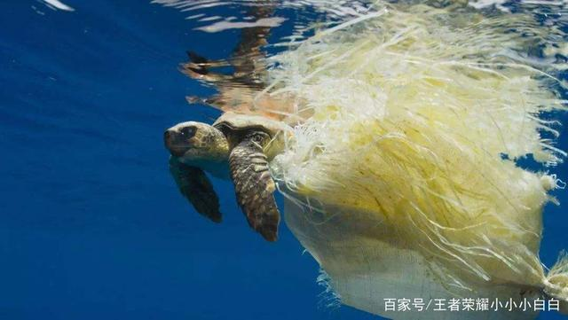

30年に魚を食べるために、海洋生態環境の保護は、重要かつ緊急の課題となっている。 27、海洋湖沼中国協会が主催する "海洋や湖沼や湿地の生態学的安全保障のグローバルな変化、"学術交流は、南京で開催され、全国から専門家や学者の多くは、コンサルティングやその他の活動の中国の海洋や湖沼、生態学的安全保障の保護を計画するために一緒に集まった。 中国の海や湖の生態安全保障、コンサルティングなどの活動。
もし沖合が再び汚染されれば、30年後には食べる魚もなくなるだろう

"発見された海洋生物は12万種と推定されるが、100万種が存在し、海洋の90％は人類にとってより深い意義を持っている。" 中央科学院海洋研究所の中国海洋湖学会会長である孫松氏は、"現在頻発している海洋生態災害、海洋生物資源の劣化、その他海洋生態系が直面している大きな問題は、海洋生物多様性の変化と密接な関係がある "と述べた。 2011年中国海洋開発報告』によると、沿岸の港湾の開発と林業は基本的に、埋め立てによる「代替港湾の盲目的な接収と下限利用の状況」を形成している。 現在、中国の海岸線18,000キロのうち、10,000キロ近くが人工的なものであり、海岸の半分以上が人工的なものである。" 人工養殖、埋め立て、中国の集中的な中国研究は、海に大きな負担をかけている。 孫松氏は、中国は富栄養化や有害な赤潮の発生メカニズムなどについて系統的な研究を行っており、今後はクラゲの発生メカニズムなど、グローバル化問題でもある関連研究を行う必要があると述べた。 近年、中国沖合におけるクラゲの数が増加し、海洋生態系の安全に大きな脅威をもたらしている。 クラゲは海洋生態系において特別な地位を占めており、もしクラゲが海洋生態系の支配種となれば、海洋生態系全体の構造と機能が根本的に変化する。 一度そのようなパターンが形成されると、そこから回復することは非常に困難である。 重要なのは、このような取り返しのつかない事態を避けるために、適切な対策を講じることである。 孫松氏は、「海洋生物多様性の変化だけでなく、種の変化や機能群の変化、例えば、多くの海域に生息するベイト生物がクラゲなどのディアスポラ生物に置き換わっていないか、生態系のバランスが崩れていないか、海洋生態系が構造変化を起こし、人間へのサービス機能に影響を及ぼしていないかなどを観察する必要がある」と述べている。 " 海洋汚染は10年で倍増 カナダの科学者と他の研究者のチームによる論文で、一流国際誌『サイエンス』はこう述べている。"乱獲と汚染は海洋生態系の破壊を加速させ、現在のペースで続けば、2048年までにこれらの漁業は個体数の完全な崩壊、漁業価値の喪失、人々の漁業へのアクセスの喪失に直面する"。 実際の状況はどうなのか？ 中国漁業科学院の金向志院長は、乱獲、埋め立て、環境汚染、気候変動が中国の海洋生態系に与える現在の影響は深刻だと述べた。 調査によると、中国の沿岸海域は深刻な汚染状態にあり、沿岸生態系の健全性の悪化は根本的に緩和されていない。 水域の富栄養化や栄養塩の不均衡、河口域の産卵場の劣化、生活環境の喪失や変化、生物群集の構造の異常などである。 海洋生態系の汚染は漁業にさらに深刻な影響を及ぼしており、公式の検査データによれば、中国の沖合海域における汚染の程度は過去10年間でほぼ倍増し、赤潮は年に60回以上発生し、マングローブ林、サンゴ礁、湿地帯などの重要な生態系はそれぞれ73％、80％、57％の価値を失っている。 東海岸の浙江省では、省内海域の3分の1が底生生物となっている。 黄渤海漁場、舟山漁場、南シナ海沿岸漁場、通商湾漁場、"四大漁場 "の資源枯渇はほとんどその名の通りである。 「中国は1990年代、世界で初めて養殖漁業国の漁獲能力以上になった。 海洋生態系の保護が重要かつ緊急の課題となっている。 "深海の海洋は、地球の気候システムの重要な一部であり、その移動プロセスは、地球の気候、水循環と生物地球化学サイクルを調節する上で重要な役割を果たしている。" 中国海洋大学の神学者ウーはこう説明する。"過去半世紀ほどの気候システムの熱成長の90％以上が海洋に吸収され、深海の海洋が地球温暖化を大きく遅らせてきた。" しかし、熱を吸収し、熱と淡水のバランスを変化させる深海の力学的プロセスも劇的に変化しており、海洋環境、気候、特に異常気象に重要な影響を及ぼしている。 近年、オニュのチームは、南シナ海の海底に50個近い潜在的なマーカーを設置し、海洋内の波や混合、深層流のプロセスを観測している。 この技術は国際的なものである。 中国が東シナ海や南シナ海で油田やガス田、可燃性の氷、深海ダイビングを開発するにつれ、海洋動力工学研究は国家安全保障、海洋資源開発、海洋環境保護において重要な役割を果たすだけでなく、人類の日常生活にもますます近づいていると呉信欣は言う。 「海洋の気候変動は陸上とは異なります。 気候変動を1、2年前に予測し、警告を発することもできます」。 ウー・シンは、海洋力学のプロセスや海と空気のエネルギー交換を研究することで、台風災害予測を改善できると述べた。 現在、月着陸プロジェクトのような "透明な海洋 "研究プログラムを推進し、将来の特定期間における海洋環境、気候、資源の空間的・時間的変化を予測する予測システムを構築している。